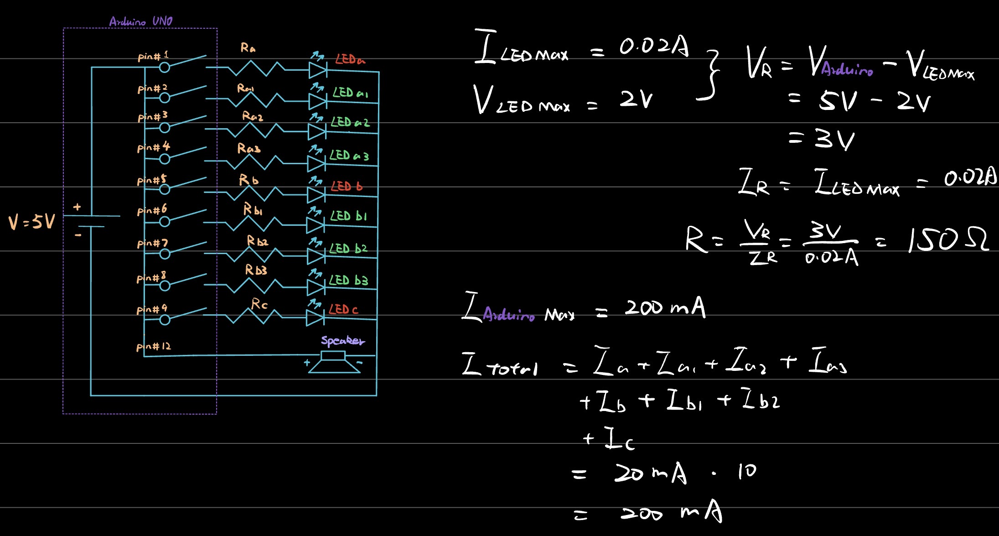
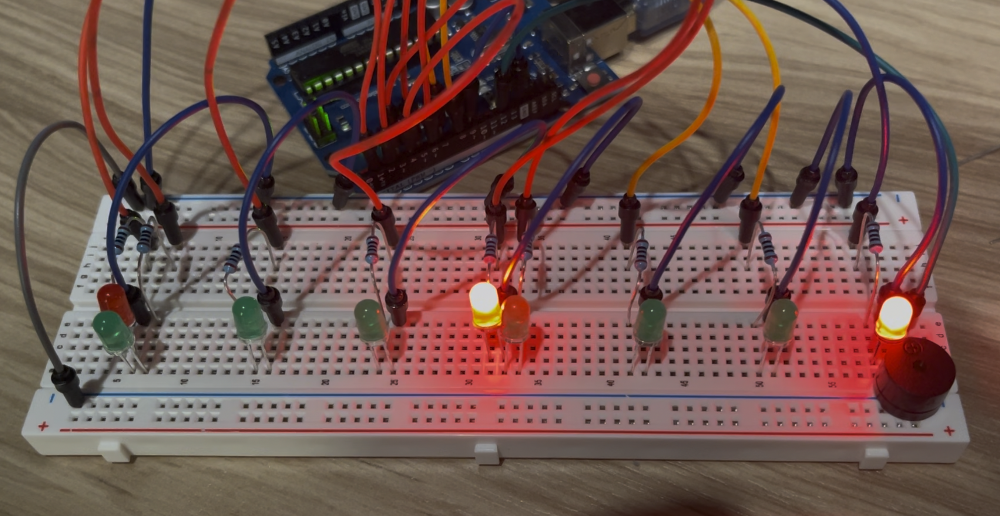
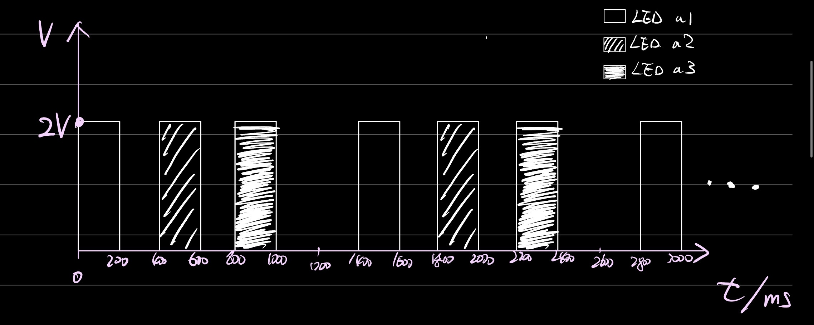

Here is all the documentation for assignment 1! I designed a dynamic map for the Seattle Link Light Rail. By combining dynamic flashing lights with a static map and mounting the display on the door frames of Link Light Rail trains, passengers can instantly see the following information at a glance: the current station, the next station, and the terminal station.
When the train arrives at a station: The red light corresponding to that station flashes, and an notification sound plays.
When the train departs: The green light flashes dynamically to indicate the next station, and an notification sound plays.
1. Schematic & Circuit
Here is the schematic and the breadboard implementation of my circuit.

Caption: This schematic shows my LEDs connected in parallel, each protected by a resistor.

Caption: Breadboard implementation controlled by the Arduino Uno.
2. Circuit Operation
Caption: The LEDs blinking dynamically, simulating the station indicators on a light rail map. (Turn on the sound to hear the buzzer!)
When the train arrives at a station: The red light corresponding to that station flashes, and an notification sound plays.
When the train departs: The green light flashes dynamically to indicate the next station, and an notification sound plays.
3. Firmware
Here is the code that controls the blinking pattern and the buzzer:
// Include the pitches header file for musical notes definitions
#include "piches.h"
// Declare integer for LED pin a at pin 1
int a = 1;
// Declare integer for LED pin a1 at pin 2
int a1 = 2;
// Declare integer for LED pin a2 at pin 3
int a2 = 3;
// Declare integer for LED pin a3 at pin 4
int a3 = 4;
// Declare integer for LED pin b at pin 5
int b = 5;
// Declare integer for LED pin b1 at pin 6
int b1 = 6;
// Declare integer for LED pin b2 at pin 7
int b2 = 7;
// Declare integer for LED pin b3 at pin 8
int b3 = 8;
// Declare integer for LED pin c at pin 9
int c = 9;
// Declare integer for the buzzer at pin 12
int buzzerPin = 12;
// Declare global array for the next stop melody notes
int mldNext[] = {NOTE_A4, NOTE_E4};
// Declare global array for the next stop note durations
int durNext[] = {2, 2};
// Declare global array for the arrived melody notes
int mldArr[] = {NOTE_C5, NOTE_E5, NOTE_G5, NOTE_C6};
// Declare global array for the arrived note durations
int durArr[] = {8, 8, 8, 2};
// Store the ID of the currently playing melody
int currentMelody = 0;
// Track the index of the currently playing note
int noteIndex = 0;
// Track the start time of the current note in milliseconds
unsigned long noteStartTime = 0;
// Track the required duration for the current note
int noteDuration = 0;
// Track the total time including the pause gap after the note
int pauseDuration = 0;
// Boolean flag to track if any melody is actively playing
bool isPlaying = false;
// Boolean flag to track if we are in the silent pause between notes
bool isWaitingForNextNote = false;
// Define function to update buzzer state asynchronously without blocking
void updateBuzzer() {
// Exit the function immediately if no melody is set to play
if (!isPlaying) return;
// Retrieve the current time elapsed since the program started
unsigned long currentMillis = millis();
// Check if we are currently playing the active tone part of the note
if (!isWaitingForNextNote) {
// Check if the current note has played for its full duration
if (currentMillis - noteStartTime >= noteDuration) {
// Transition to the pause state by setting the waiting flag to true
isWaitingForNextNote = true;
}
}
// Execute this block if we are in the pause phase after a note
else {
// Check if the total time including the silent pause has elapsed
if (currentMillis - noteStartTime >= pauseDuration) {
// Increment the note index to prepare for the next note
noteIndex++;
// Call startNote to begin playing the next note in the sequence
startNote();
}
}
}
// Define function to initialize and trigger the current note
void startNote() {
// Declare a variable to store the pitch of the note to play
int noteToPlay = 0;
// Declare a variable to store the playback duration of the note
int duration = 0;
// Check if the next stop melody is currently active
if (currentMelody == 1) {
// Verify if all notes in the next stop melody have been completed
if (noteIndex >= 2) {
// Mark playing status as false to fully stop the melody
isPlaying = false;
// Exit the function early since the melody is finished
return;
}
// Fetch the specific note pitch from the next stop array
noteToPlay = mldNext[noteIndex];
// Calculate the note duration based on its fraction value
duration = 1000 / durNext[noteIndex];
}
// Check if the arrived melody is currently active
else if (currentMelody == 2) {
// Verify if all notes in the arrived melody have been completed
if (noteIndex >= 4) {
// Mark playing status as false to fully stop the melody
isPlaying = false;
// Exit the function early since the melody is finished
return;
}
// Fetch the specific note pitch from the arrived array
noteToPlay = mldArr[noteIndex];
// Calculate the note duration based on its fraction value
duration = 1000 / durArr[noteIndex];
}
// Activate the buzzer pin with the specified note pitch and duration
tone(buzzerPin, noteToPlay, duration);
// Save the active duration of the newly started note
noteDuration = duration;
// Calculate and save the total duration including the 30 percent gap
pauseDuration = duration * 1.30;
// Record the exact start time of this note
noteStartTime = millis();
// Reset the waiting flag to indicate a note is actively emitting sound
isWaitingForNextNote = false;
}
// Define function to trigger the playback of the next stop melody
void playNextStop() {
// Set the active melody ID to 1 for the next stop sequence
currentMelody = 1;
// Reset the note index to 0 to start from the very beginning
noteIndex = 0;
// Set the playing status flag to true
isPlaying = true;
// Call startNote to begin emitting sound immediately
startNote();
}
// Define function to trigger the playback of the arrived melody
void playArrived() {
// Set the active melody ID to 2 for the arrived sequence
currentMelody = 2;
// Reset the note index to 0 to start from the very beginning
noteIndex = 0;
// Set the playing status flag to true
isPlaying = true;
// Call startNote to begin emitting sound immediately
startNote();
}
// Define a custom wait function that replaces standard blocking delay
void wait(unsigned long ms) {
// Record the current time at the start of the wait period
unsigned long start = millis();
// Loop continuously as long as the elapsed time is less than requested
while (millis() - start < ms) {
// Continually process the buzzer logic inside the waiting loop
updateBuzzer();
}
}
// Define the standard Arduino setup function
void setup() {
// Configure pin a as a digital output
pinMode(a, OUTPUT);
// Configure pin a1 as a digital output
pinMode(a1, OUTPUT);
// Configure pin a2 as a digital output
pinMode(a2, OUTPUT);
// Configure pin a3 as a digital output
pinMode(a3, OUTPUT);
// Configure pin b as a digital output
pinMode(b, OUTPUT);
// Configure pin b1 as a digital output
pinMode(b1, OUTPUT);
// Configure pin b2 as a digital output
pinMode(b2, OUTPUT);
// Configure pin b3 as a digital output
pinMode(b3, OUTPUT);
// Configure pin c as a digital output
pinMode(c, OUTPUT);
// Configure the buzzer pin as a digital output
pinMode(buzzerPin, OUTPUT);
}
// Define the standard Arduino loop function
void loop() {
// Turn on LED c by setting its pin HIGH
digitalWrite(c, HIGH);
// Turn on LED b by setting its pin HIGH
digitalWrite(b, HIGH);
// Initiate the arrived melody playback in the background
playArrived();
// Declare loop counter variable x and initialize it to 0
int x = 0;
// Start a while loop that runs 10 times
while(x < 10) {
// Turn on LED a by setting its pin HIGH
digitalWrite(a, HIGH);
// Wait for 500 milliseconds using the custom non-blocking function
wait(500);
// Turn off LED a by setting its pin LOW
digitalWrite(a, LOW);
// Wait for 500 milliseconds using the custom non-blocking function
wait(500);
// Increment the loop counter x by 1
x++;
}
// Declare loop counter variable y and initialize it to 0
int y = 0;
// Initiate the next stop melody playback in the background
playNextStop();
// Start a while loop that runs 10 times
while(y < 10) {
// Turn on LED a1 by setting its pin HIGH
digitalWrite(a1, HIGH);
// Wait for 200 milliseconds using the custom non-blocking function
wait(200);
// Turn on LED a2 by setting its pin HIGH
digitalWrite(a2, HIGH);
// Wait for 200 milliseconds using the custom non-blocking function
wait(200);
// Turn on LED a3 by setting its pin HIGH
digitalWrite(a3, HIGH);
// Wait for 200 milliseconds using the custom non-blocking function
wait(200);
// Turn off LED a1 by setting its pin LOW
digitalWrite(a1, LOW);
// Turn off LED a2 by setting its pin LOW
digitalWrite(a2, LOW);
// Turn off LED a3 by setting its pin LOW
digitalWrite(a3, LOW);
// Wait for 200 milliseconds using the custom non-blocking function
wait(200);
// Increment the loop counter y by 1
y++;
}
// Declare loop counter variable z and initialize it to 0
int z = 0;
// Initiate the arrived melody playback in the background again
playArrived();
// Start a while loop that runs 10 times
while(z < 10) {
// Turn on LED b by setting its pin HIGH
digitalWrite(b, HIGH);
// Wait for 500 milliseconds using the custom non-blocking function
wait(500);
// Turn off LED b by setting its pin LOW
digitalWrite(b, LOW);
// Wait for 500 milliseconds using the custom non-blocking function
wait(500);
// Increment the loop counter z by 1
z++;
}
// Declare loop counter variable q and initialize it to 0
int q = 0;
// Initiate the next stop melody playback in the background again
playNextStop();
// Start a while loop that runs 10 times
while(q < 10) {
// Turn on LED b1 by setting its pin HIGH
digitalWrite(b1, HIGH);
// Wait for 200 milliseconds using the custom non-blocking function
wait(200);
// Turn on LED b2 by setting its pin HIGH
digitalWrite(b2, HIGH);
// Wait for 200 milliseconds using the custom non-blocking function
wait(200);
// Turn on LED b3 by setting its pin HIGH
digitalWrite(b3, HIGH);
// Wait for 200 milliseconds using the custom non-blocking function
wait(200);
// Turn off LED b1 by setting its pin LOW
digitalWrite(b1, LOW);
// Turn off LED b2 by setting its pin LOW
digitalWrite(b2, LOW);
// Turn off LED b3 by setting its pin LOW
digitalWrite(b3, LOW);
// Wait for 200 milliseconds using the custom non-blocking function
wait(200);
// Increment the loop counter q by 1
q++;
}
// Declare loop counter variable p and initialize it to 0
int p = 0;
// Initiate the arrived melody playback for the final time in the sequence
playArrived();
// Start a while loop that runs 10 times
while(p < 10) {
// Turn on LED c by setting its pin HIGH
digitalWrite(c, HIGH);
// Wait for 500 milliseconds using the custom non-blocking function
wait(500);
// Turn off LED c by setting its pin LOW
digitalWrite(c, LOW);
// Wait for 500 milliseconds using the custom non-blocking function
wait(500);
// Increment the loop counter p by 1
p++;
}
// Wait for 10 seconds before entirely restarting the main sequence loop
wait(10000);
}
4. Additional Questions
Question 1: Voltage over Time Graph

Caption: The graph above represents the voltage across three LEDs over time. The high peaks indicate 2V (LED ON), and the low valleys indicate 0V (LED OFF).
Question 2: Max LEDs and Current
The Arduino UNO has 14 digital pins and 6 analog pins that can function as digital outputs, meaning I could independently control up to 20 LEDs. However, there is a current limitation. The maximum total current limit is 200mA. If a standard LED draws 20mA, turning all 20 LEDs on simultaneously would draw 400mA, which would severely damage the board. Therefore, to safely blink 20 LEDs at the exact same time, I would need to use higher-value resistors to restrict the current per pin to under 10mA (200mA / 20 = 10mA).
Question 3: Blinking Speed and Human Perception
I discovered that my eyes can no longer perceive the blinking when the interval drops to roughly 20 milliseconds (50 flashes per second).
Question 4: AI Usage
Yes, I used an AI tool (Gemini) as a thought partner to help troubleshoot my hardware logic and structure my HTML boilerplate. Initially, my Arduino code utilized the standard delay() function, which blocked the program and prevented the light sequences and the buzzer from operating concurrently. The AI introduced me to the concept of a non-blocking state machine using the millis() function, allowing me to run these tasks simultaneously. I also use Gemini to organize the content and wrote the code for this webpage.